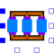
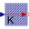

Transformer3PhaseYyWithHysteresisThree-phase transformer in Yy configuration |

|
Diagram
{kind=link}
Information
This information is part of the Modelica Standard Library maintained by the Modelica Association.
Simple model of a three-phase transformer with primary and a secondary windings and a magnetic E-I shaped core. The core is modeled with GenericHystTellinenEverett flux tube elements. Thus, this model considers static and dynamic hysteresis as well as initial flux.
|
|
Parameters (34)
| useHeatPort |
Value: false Type: Boolean Description: = true, if HeatPort is enabled |
|---|---|
| T |
Value: 293.15 Type: Temperature (K) Description: Fixed device temperature if useHeatPort = false |
| N1 |
Value: 10 Type: Integer Description: Primary turns |
| L1 |
Value: 1.2 * 2 * (a + b) Type: Length (m) Description: Mean primary turn length |
| d1 |
Value: 0.5e-3 Type: Length (m) Description: Wire diameter of primary turns |
| rho1 |
Value: 1.678e-8 Type: Resistivity (Ω·m) Description: Resistivity of primary winding (at 20degC) |
| alpha1 |
Value: 0 Type: LinearTemperatureCoefficient (¹/K) Description: Temperature coefficient of primary turns |
| N2 |
Value: 10 Type: Integer Description: Secondary turns |
| L2 |
Value: L1 Type: Length (m) Description: Mean secondary turn length |
| d2 |
Value: d1 Type: Length (m) Description: Wire diameter of secondary turns |
| rho2 |
Value: rho1 Type: Resistivity (Ω·m) Description: Resistivity of secondary winding (at 20degC) |
| alpha2 |
Value: alpha1 Type: LinearTemperatureCoefficient (¹/K) Description: Temperature coefficient of secondary turns |
| l1 |
Value: 40e-3 Type: Length (m) Description: Mean length l1 of core |
| l2 |
Value: 60e-3 Type: Length (m) Description: Mean length l2 of core |
| a |
Value: 15e-3 Type: Length (m) Description: Height of core |
| b |
Value: 10e-3 Type: Length (m) Description: Width of core |
| mat |
Value: FluxTubes.Material.HysteresisEverettParameter.BaseData() Type: BaseData Description: Core Material |
| MagRelStart |
Value: {0, 0, 0} Type: Real[3] Description: Initial magnetization of Core (-1..1) |
| MagRelFixed |
Value: {false, false, false} Type: Boolean[3] Description: Fixed |
| HStart |
Value: {0, 0, 0} Type: MagneticFieldStrength[3] (A/m) Description: Initial magnetic field strength of Core |
| HFixed |
Value: {false, false, false} Type: Boolean[3] Description: Fixed |
| I1Start |
Value: {0, 0, 0} Type: ElectricCurrent[3] (A) Description: Initial current of primary Windings |
| I1Fixed |
Value: {false, false, false} Type: Boolean[3] Description: Fixed |
| I2Start |
Value: {0, 0, 0} Type: ElectricCurrent[3] (A) Description: Initial current of secondary Windings |
| I2Fixed |
Value: {false, false, false} Type: Boolean[3] Description: Fixed |
| EddyCurrents |
Value: false Type: Boolean Description: Enable eddy currents |
| sigma |
Value: mat.sigma Type: Conductivity (S/m) Description: Conductivity of core material |
| t |
Value: 0.5e-3 Type: Length (m) Description: Thickness of lamination |
| L_l1 |
Value: 10e-3 Type: Length (m) Description: Length of leakage of primary Winding |
| A_l1 |
Value: 10e-6 Type: Area (m²) Description: Cross section of leakage of primary Winding |
| mu_rel1 |
Value: 1 Type: Real Description: Constant relative permeability of primary leakage (>0 required) |
| L_l2 |
Value: 10e-3 Type: Length (m) Description: Cross section of leakage of secondary Winding |
| A_l2 |
Value: 10e-6 Type: Area (m²) Description: Length of leakage of secondary Winding |
| mu_rel2 |
Value: 1 Type: Real Description: Constant relative permeability of secondary leakage (>0 required) |
Outputs (14)
| v1 |
Type: Voltage[3] (V) Description: Voltage drop of primary winding 1-3 |
|---|---|
| v2 |
Type: Voltage[3] (V) Description: Voltage drop of secondary winding 1-3 |
| R1 |
Type: Resistance[3] (Ω) Description: Resistance of primary winding 1-3 |
| R2 |
Type: Resistance[3] (Ω) Description: Resistance of secondary winding 1-3 |
| i1 |
Type: Current[3] (A) Description: Current in primary winding 1-3 |
| i2 |
Type: Current[3] (A) Description: Current in secondary winding 1-3 |
| B |
Type: MagneticFluxDensity[3] (T) Description: Magnetic Flux Density in core portions 1-3 |
| Phi |
Type: MagneticFlux[3] (Wb) Description: Magnetic Flux through core portions 1-3 |
| Hstat |
Type: MagneticFieldStrength[3] (A/m) Description: Ferromagnetic portion of magnetic field strength |
| Heddy |
Type: MagneticFieldStrength[3] (A/m) Description: Eddy current portion of magnetic field strength |
| H |
Type: MagneticFieldStrength[3] (A/m) Description: Total magnetic field strength of core |
| LossPowerWinding |
Type: Power (W) Description: Winding losses |
| LossPowerStat |
Type: Power (W) Description: Ferromagnetic hysteresis losses |
| LossPowerEddy |
Type: Power (W) Description: Eddy current losses |
Connectors (9)
| heatPort |
Type: HeatPort_a |
|
|---|---|---|
| p1 |
Type: PositivePin Description: Primary winding 1 |
|
| p2 |
Type: PositivePin Description: Primary winding 2 |
|
| p3 |
Type: PositivePin Description: Primary winding 3 |
|
| n1 |
Type: NegativePin Description: Secondary winding 1 |
|
| n2 |
Type: NegativePin Description: Secondary winding 2 |
|
| n3 |
Type: NegativePin Description: Secondary winding 3 |
|
| starPoint2 |
Type: NegativePin Description: Star point of secondary windings |
|
| starPoint1 |
Type: NegativePin Description: Star point of primary windings |
Components (19)
|  | Temp |
Type: PrescribedTemperature |
|---|---|---|
| mat |
Type: BaseData Description: Core Material |
|
| core1 | ||
| core2 | ||
| core3 | ||
| ground |
Type: Ground |
|
| winding11 | ||
| winding12 | ||
| winding13 | ||
| winding21 | ||
| winding22 | ||
| winding23 | ||
| resistor11 |
Type: Resistor |
|
| resistor21 |
Type: Resistor |
|
| resistor12 |
Type: Resistor |
|
| resistor22 |
Type: Resistor |
|
| resistor23 |
Type: Resistor |
|
| resistor13 |
Type: Resistor |
|
| leakage |
Type: Cuboid |
Used in Examples (1)
|
ThreePhaseTransformerWithRectifier Modelica.Magnetic.FluxTubes.Examples.Hysteresis Three-phase transformer (including hysteresis effect) with rectifier |